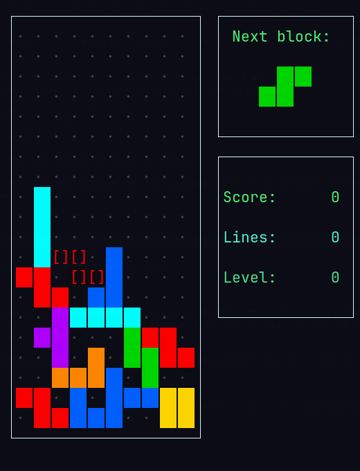
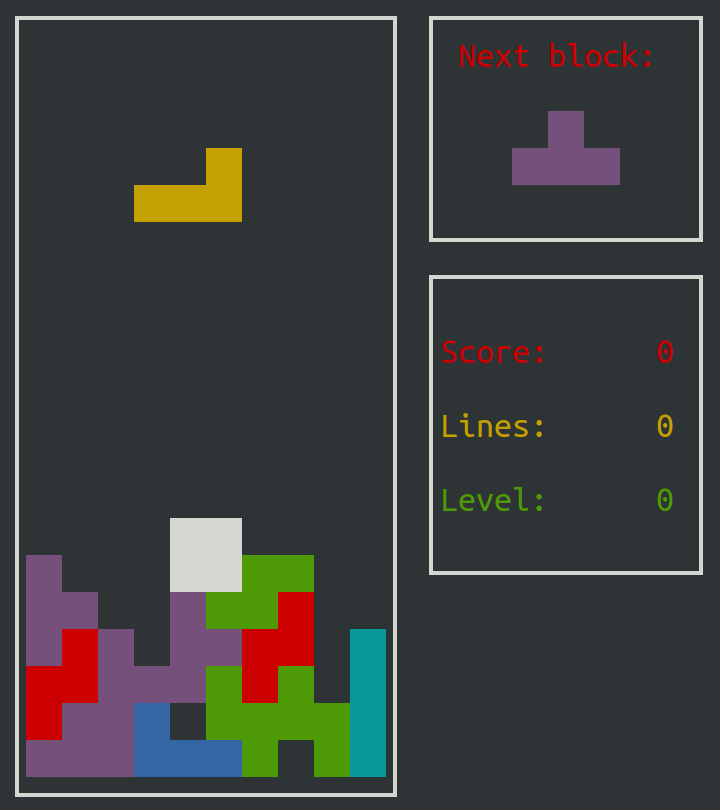

What it is
Bastet ("bastard Tetris") is a small ncurses game from 2005. Instead of picking pieces at random, it looks at your stack and chooses the one that hurts most. That usually means the straight I-piece never comes. I play it in a terminal on my Omarchy desktop, and a few things bugged me: the colours were off, it was hard to judge where a piece would land, and the screen went blank whenever my tiling window manager resized the window. So I forked it.
Before & after


What I changed
- Classic colours: every tetromino gets the colour you'd expect (I cyan, O yellow, T purple, S green, Z red, J blue, L orange). The original only had the 8 basic terminal colours, so the O-piece was white and there was no orange.
- Ghost piece: a
[]outline in the falling piece's colour shows exactly where it will land if you hard-drop it. - Background grid: a faint dot in every empty cell, so you can see which column you're lining up with.
- Tile gaps: a thin dark gap between squares, so you can count the cells in a stack.
- Resize-safe: the original goes blank whenever its window changes size, which happens all the time under Hyprland. dqtris re-centres and redraws the game, the menus and the pause screen on every resize.
How it was made
Built in one morning with Claude Code, one change at a time. I tried a couple of looks before settling. White outlines around each square looked busy, so they lost to simple gaps, and a giant fullscreen version went back to normal size. The bastard block-chooser itself is untouched: it's still Federico Poloni's 2005 algorithm, and it still won't send me the line piece. The fork is about 150 lines of C++, published on GitHub under the original GPL v3 licence.
Stack
dqtris in any terminal